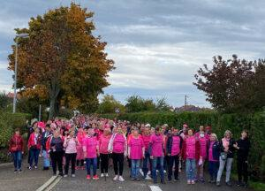

NOUVEAUX HORAIRES d’ouverture de la Mairie

Nouveaux horaires d’ouverture de la Mairie A compter du 2 novembre 2022, veuillez noter les nouveaux horaires de l’Hôtel de Ville : du lundi au vendredi 8h à 12h et 13h à 17h
Plan d’économies d’énergies

Dans le contexte actuel de crise de l’énergie, le conseil municipal de Hoenheim, réuni le 26 septembre dernier, a adopté un plan d’économies d’énergies pour la ville. Ce plan concerne différents aspects détaillés ci-dessous : CHAUFFAGE Encadrement de la période de chauffe, à savoir du 1er octobre au 31 mars avec une […]
Marche Vitaboucle du 16 octobre 2022

La marche qui a emprunté le parcours Vitaboucle n°14 de 6,1 km à travers la ville le 16 octobre dernier à Hoenheim a connu un véritable succès. Cette marche solidaire a rassemblé plus de 600 personnes pour soutenir la marraine de la Strasbourgoeise 2022 Karine DEBARGUE, hoenheimoise. Le rendez-vous a été donné à 9h30 devant […]
Élections présidentielles 2022 – Résultats des bureaux de votes hoenheimois
Élections présidentielles 2022 Vous trouverez ci-dessous les résultats des élections présidentielles des 10 et 24 avril 2022, par bureau de vote, à Hoenheim. Elections présidentielles 2022 – 1er tour Elections présidentielles 2022 – 2e tour
« Cycle&Recyclez » bientôt à Hoenheim!

Thierry OTT, Directeur chez Skoda Hoenheim a rencontré David MICELI, Président et Daniel ZUGMEYER, Vice Président de l’association Cycle & Recycle Hoenheim. En présence du Maire Vincent DEBES, le partenaire de la nouvelle association en cours d’installation dans l’ancienne caserne des pompiers à l’arrière de la mairie, a témoigné de tout son soutien pour ce […]